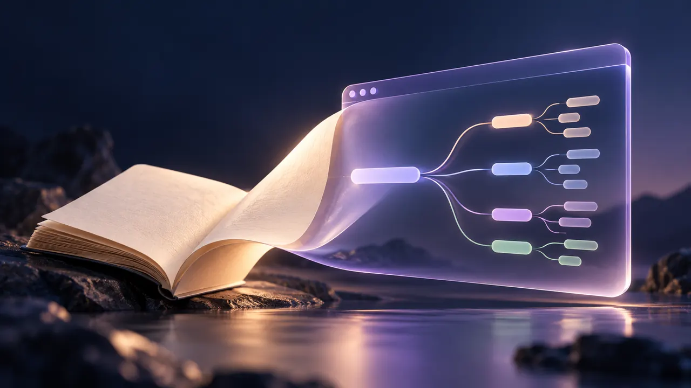

查看设计 · 开发历程↗概念封面 6 本教材 · 326 条知识点本站可体验 多书知识问答台找到答案，也找到出处。把六本教材的知识点串起来，用语义检索寻找相关内容，结合章节引用与关联知识点，帮助复习与理解。 6 本教材326 条知识点语义检索与出处引用打开问答台阅读开发记录项目详情首次使用需加载语义模型；答案来自已收录的知识点。
查看设计 · 开发历程↗概念封面 v1.1.0 · Obsidian 插件可下载插件 Note to Site让笔记，走向更多读者。在 Obsidian 中把当前笔记转换成网站文章 HTML，生成导语、正文、大纲与彩色思维导图，复制或保存后即可接入自己的发布流程。 笔记转文章 HTML导语与正文大纲彩色思维导图下载插件预览思维导图项目详情解压后将 note-to-site 文件夹放到笔记库的 .obsidian/plugins/ 中，再在 Obsidian 中启用。